Impulso, Sinais Complexos e Amostragem#
Definição de Funções#
Considere dois conjuntos: o conjunto X com elemento \(x\) e o conjunto Y com elementos \(y\).
f: X \(\rightarrow\) Y
diz-se que a função f de X em Y que relaciona cada elemento \(x\) em X, um único elemento \(y = f(x)\) em Y.
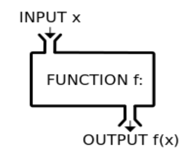
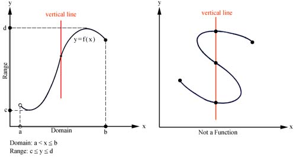
Funções Básicas#
Função degrau unitário#
\( u(t)= \begin{cases} \displaystyle 1, t\geq 0 \\ \\ \displaystyle 0, t<0 \end{cases} \)
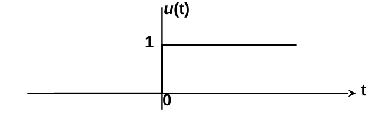
Função impulso unitário#
\(\delta(t) = 0\), \(\forall\) \(t \neq 0\)
\(\int_{-\infty}^{\infty}\delta(t)dt = 1\)
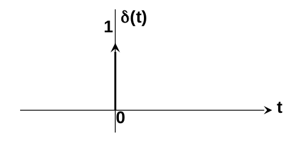
Interpretação da função \(\delta(t)\)#
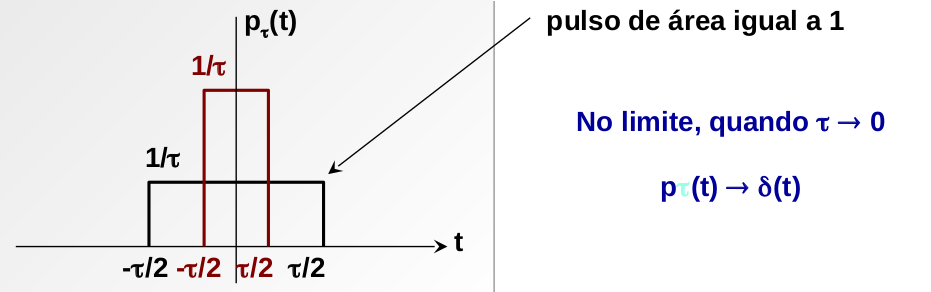
Propriedades da função \(\delta(t)\)#
A função impulso é par:
\(\delta(t)\) = \(\delta(-t)\)
Mudança de escala:
\(\delta(at)\) = \(\frac{1}{a}\delta(t)\)
Multiplicação por uma função:
\(\int_{-\infty}^{\infty}x(t)\delta(t-t_{0})dt = x(t_{0})\)
Multiplicação por uma função (de modo informal):
\(x(t)\delta(t-t_{0}) = x(t_{0})\delta(t-t_{0})\)
Função degrau unitário como função da função impulso: -\(u(t) = \int_{-\infty}^{t}\delta(\tau)d\tau = \int_{0}^{\infty}\delta(t-\tau)d\tau\)
Função trem de impulsos:
\(\delta_{T}(t) = \sum_{k=-\infty}^{\infty}\delta(t-kT)\)
Sinais Complexos#
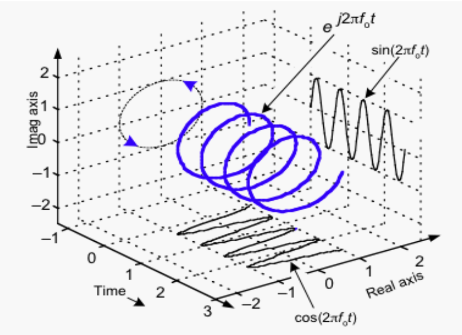
Relação de Euler#
Circuito para gerar Sinais Complexos#
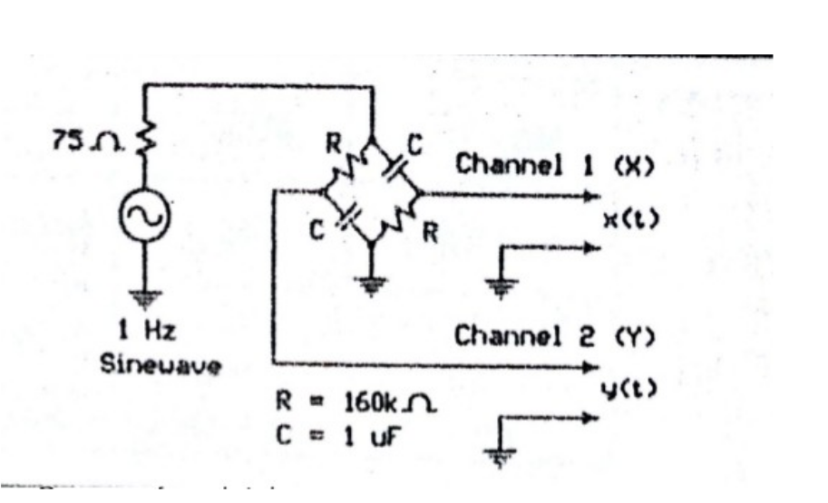
Sinais Amortecidos#
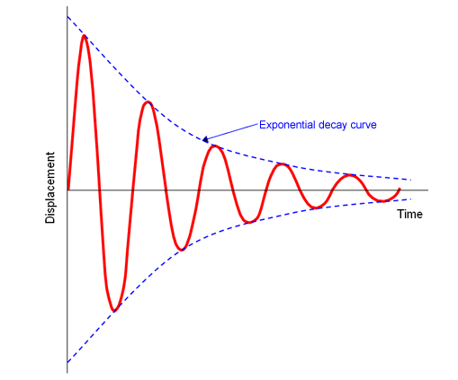
Amostragem#
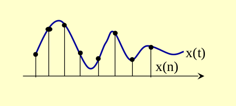
Sinais em tempo discreto#
Amostragem periódica#
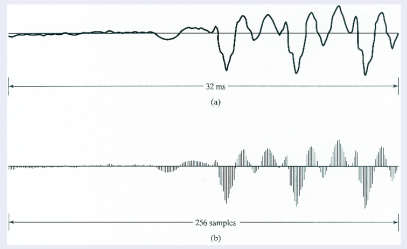
Sinais em tempo discreto#
Uma seqüência de números \(x\), na qual o n-ésimo número da seqüência é denotado por \(x[n]\) pode ser descrito como: \(x = x[n]\), \(-\infty < n < \infty\)
Em situações práticas, as seqüências são geradas a partir da amostragem periódica de um sinal contínuo no tempo. Neste caso, o valor numérico do n-ésimo número da seqüência é igual ao valor do sinal analógico \(x_a(t)\) no tempo \(nT\):
\(x[n] = x_a(nT), -\infty < n < \infty\)
O valor de \(T\) é conhecido como período de amostragem e 1/T é a frequência de amostragem.
Amostragem#
A teoria da Amostragem é a base matemática para se obter um sinal \(x[n]\) discreto no tempo a partir de um sinal \(x(t)\) contínuo no tempo.
A obtenção de uma sequência de amostras \(x(n)\) a partir de um sinal \(x(t)\) contínuo no tempo pode ser representada pela seguinte relação:
\(x[n] = x(t)|_{t=nT_a} = x(nT_a)\)
Em que: - \(n\) é um numero inteiro; - \(T_a\) é o período de amostragem do sinal; - \(F_a = 1/T_a\) é a frequência de amostragem.
Na prática a operação de amostragem é executada por um conversor AD (analógico-digital) que inclui também a quantização das amplitudes das amostras.
Sinais discretos#
Exemplo de Sequência#
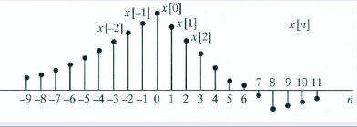
Representação Matemática#
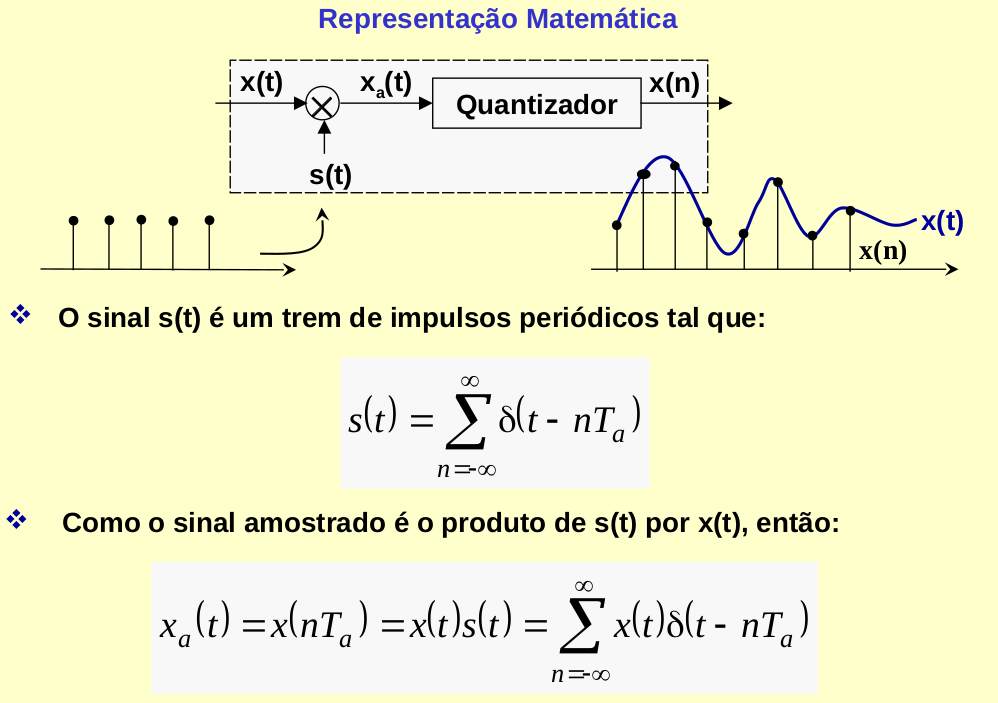
O sinal \(s(t)\) é um trem de impulsos periódicos tal que: \(s(t) = \sum_{-\infty}^{\infty}\delta(t-nT_a)\)
Como o sinal amostrado é o produto de s(t) por x(t), então: \(x_a(t) = x(nT_a) = x(t)s(t) = \sum_{-\infty}^{\infty}x(t)\delta(t-nT_a)\)
Operações com sinais em tempo discreto#
O produto e a soma de 2 seqüências \(x[n]\) e \(y[n]\) são definidos amostra por amostra.
A multiplicação de \(x[n]\) e \(\alpha\) é definida como a multiplicação de todos os elementos de \(x[n]\) por \(\alpha\).
A sequência \(y[n]\) é dita atrasada com relação a \(x[n]\) se: \begin{equation} y[n] = x[n-n_0] \end{equation} \(n_0 > 0\) ATRASO
\(n_0 < 0\) AVANÇO
\(n_0\) é um valor inteiro
Sinais discretos#
Operações com sequências#
Reversão no tempo $\(y[n] = x[-n]\)$
Sinais discretos#
Sinais especiais#
Impulso unitário: \(\delta[n]\)
\begin{equation} \delta[n] = \begin{cases} \displaystyle 0, n \neq 0 \ \ \displaystyle 1, n = 0 \end{cases} \end{equation}
Degrau unitário: \(u[n]\)
\begin{equation} u[n] = \begin{cases} \displaystyle 0, n < 0 \ \ \displaystyle 1, n \geq 0 \end{cases} \end{equation}
Sinais discretos#
Sinais especiais#
Exponencial: \(x[n] = A\alpha^n\)
Senoidal: \(x[n] = Acos(\omega n + \phi)\)
Onde \(\omega\) e \(\phi\) são valores reais e \(n\) é inteiro.